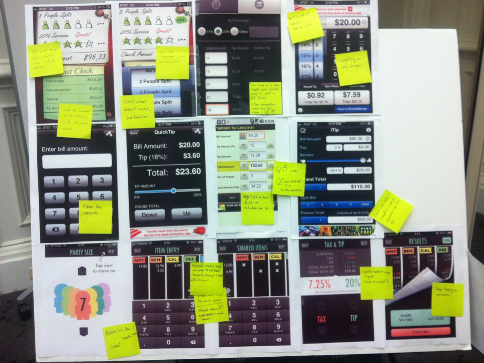
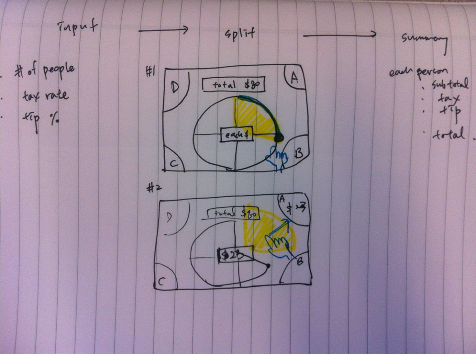
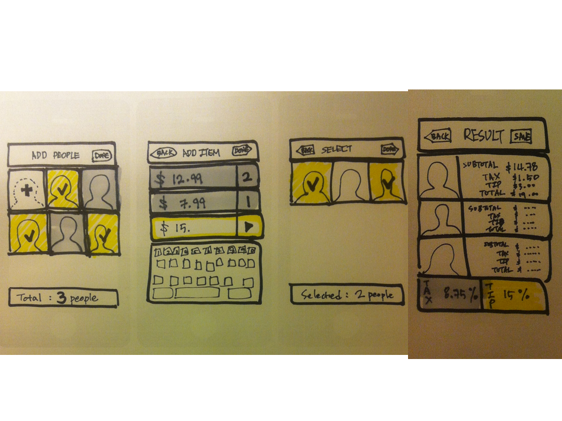
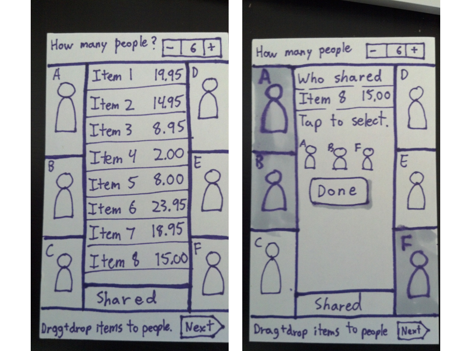
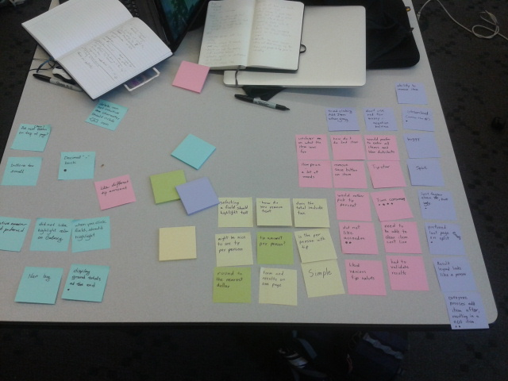
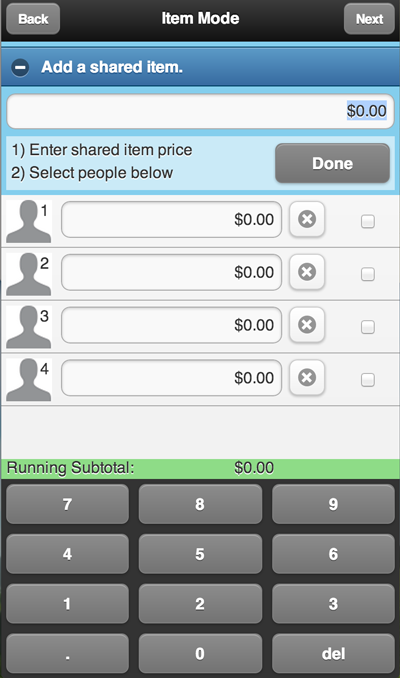
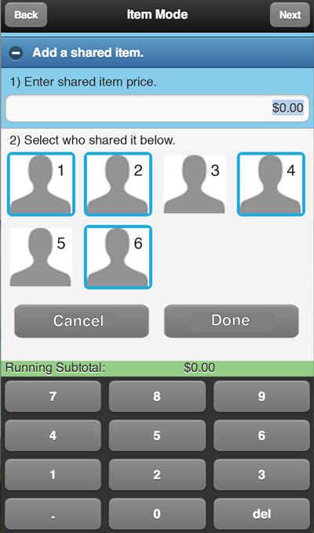

Group Tip Calculator
Link
Group Tip Calculator
Note: You can only input numbers through the onscreen numpad, since this is meant for mobile.
Skills
Interaction Design
Web Design
Research
Tools
HTML, CSS, Javascript
jQuery Mobile
Partner
Qianqian Zhao
For our Designing Mobile Experiences class, Qianqian and I created a group tip calculator. This app provides a solution for a group of people that want to split the bill depending on what they ordered. For example, someone that ordered a steak should pay more than someone who ordered a salad.
Process
We began by doing a competitive analysis. We looked at several tip calculator apps from both the Android and iOS market, and thought about what UI elements we liked in each, and what we didn't. The majority of the apps were simple tip calculators or split the bill evenly amongst the group members, but they provided plenty of insight.
We created some initial prototypes. Our main purpose here was to explore various ways to solve the problem. The far right example shows a concept where the user enters in the entire bill first and then drag and drops the items to various users.
  Next we did some user research to see how people thought when calculating tip, and to do some user testing with our prototypes. This was particularly useful in determining the flow our app should follow. By creating an affinity diagram, we were able to find identify the key issues.
We then designed and iterated the final UI, and finally created a web app using HTML, CSS, and jQuery mobile. I gained a lot of technical skill in building an actual web app.
If there was one thing I could change about the app, it's the shared item feature. I mocked up a quick prototype of how I think it should be changed. The existing one is on the left, and the prototype is on the right.
 I think there are two major problems with the existing version. First, the instructions and interface don't flow. Second, the items tied to people are shown here, but it's extraneous information and simply confuses the user. The right prototype flows much better, and is just more of a pleasure to use.
Give the link a try!